Nuestro recetario
108 recetas con nuestros productos para desayunos, comidas, cenas y meriendas. Buscar y filtrar recetas.
 VídeoCon Panecillos proteicos Low Carb
VídeoCon Panecillos proteicos Low CarbBocadillo de Atún Veraniego
 Con Baguettes Low Carb
Con Baguettes Low CarbBaguettes Dulce-Salado de Verano
 VídeoCon Picada vegetal
VídeoCon Picada vegetalHamburguesas Vegetales Rellenas de Queso
 VídeoCon The Original Protein Bread
VídeoCon The Original Protein BreadTostadas Veraniegas con Sandía
 Con Wrap Low Carb
Con Wrap Low CarbNachos con Pollo y Guacamole
 VídeoCon Tostadas Low Carb
VídeoCon Tostadas Low CarbCheesecake de Frutos Rojos con Tostadas
 Con Pizza proteica
Con Pizza proteicaPizza de Calabacín
 Con Wrap Low Carb
Con Wrap Low CarbBocaditos de Wrap con Salmón
 Con The Original Protein Bread
Con The Original Protein BreadBocaditos de Sándwich con Atún
 Con Wrap Low Carb
Con Wrap Low CarbTartaletas de Puerro y Bacon
 Con Baguettes Low Carb
Con Baguettes Low CarbBaguette Rellena Mundial
 Con Panecillos proteicos Low Carb
Con Panecillos proteicos Low Carb3 Ideas de Tostas (Hummus, Salmón, Aguacate)
 Con Wrap Low Carb
Con Wrap Low CarbConitos Rellenos Navideños
 Con Tostadas Low Carb
Con Tostadas Low CarbTostadas Dulces-Saladas Fin de Año
 Con Baguettes Low Carb
Con Baguettes Low CarbBaguettes Rellenas
 Con The Original Protein Bread
Con The Original Protein BreadTostadas Tarta de Manzana
 VídeoCon The Original Protein Bread
VídeoCon The Original Protein BreadTostadas con Langostinos
 Con The Original Protein Bread
Con The Original Protein BreadSándwich Viral de Huevo (Día del Sándwich)
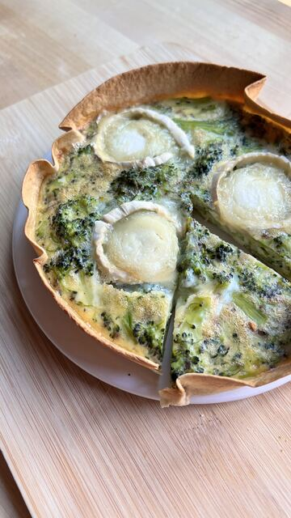
VídeoCon Wrap Low CarbTarta Salada de Brócoli con Wrap
 Con Baguettes Low Carb
Con Baguettes Low CarbBocadillo Mundial
 VídeoCon The Original Protein Bread
VídeoCon The Original Protein BreadTostadas Sabor Tarta de Manzana
 VídeoCon Pizza proteica
VídeoCon Pizza proteicaPizza de Verduras
 Con Pizza proteica
Con Pizza proteicaPizza de Calabaza con Sabor a Otoño
 VídeoCon Picada vegetal
VídeoCon Picada vegetalTacos Vegetales con Base de Lechuga
 Con The Original Protein Bread
Con The Original Protein BreadMini Quiches de Pan de Proteínas
 VídeoCon Panecillos proteicos Low Carb
VídeoCon Panecillos proteicos Low CarbPanecillos Rellenos de Pesto y Huevo
 VídeoCon Pizza proteica
VídeoCon Pizza proteicaPizza Rolls
 VídeoCon Wrap Low Carb
VídeoCon Wrap Low CarbMini Tacos de Picada Vegetal
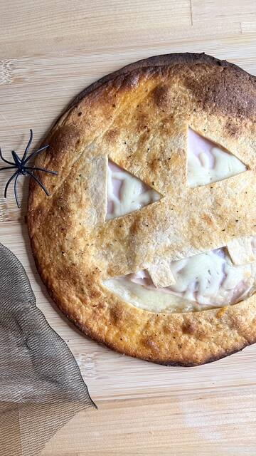
VídeoCon Wrap Low CarbQuesadilla de Halloween
 Con Panecillos proteicos Low Carb
Con Panecillos proteicos Low CarbSándwich de Huevo Vuelta al Cole
 Con Picada vegetal
Con Picada vegetalCanelones de Berenjena con Picada Vegetal
 VídeoCon Baguettes Low Carb
VídeoCon Baguettes Low CarbBocadillo de Pollo y Verduras Asadas
 VídeoCon The Original Protein Bread
VídeoCon The Original Protein BreadSándwich de Espinacas y Queso
 VídeoCon Pizza proteica
VídeoCon Pizza proteicaPizza de Salmón, Queso y Rúcula
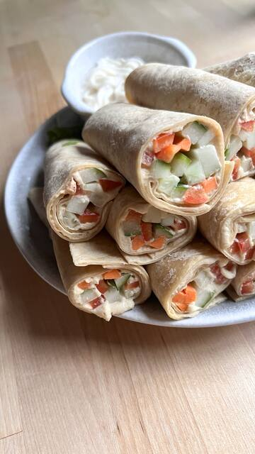
Con Wrap Low CarbRollitos de Hummus y Verduritas
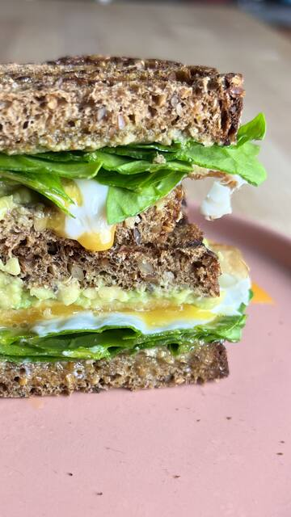
Con The Original Protein BreadSandwich Saludable Vuelta a la Rutina
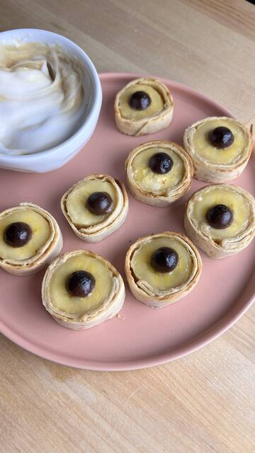
Con Wrap Low CarbBocaditos de Plátano
 Con Panecillos proteicos Low Carb
Con Panecillos proteicos Low CarbBocadillo de Berenjenas
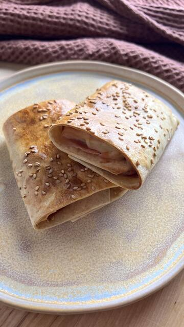
VídeoCon Wrap Low CarbNapolitanas Rellenas de Jamón y Queso
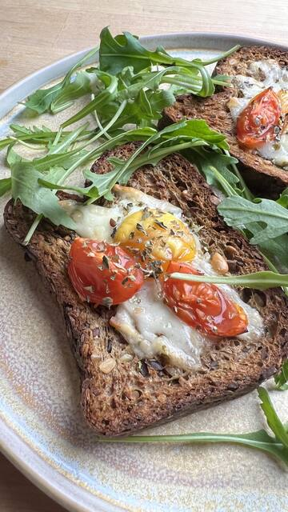
Con The Original Protein BreadTostadas de Huevo
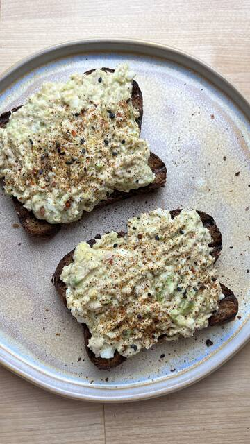
Con The Original Protein BreadTostadas de Atún
 VídeoCon Pizza proteica
VídeoCon Pizza proteicaPizza Caprese
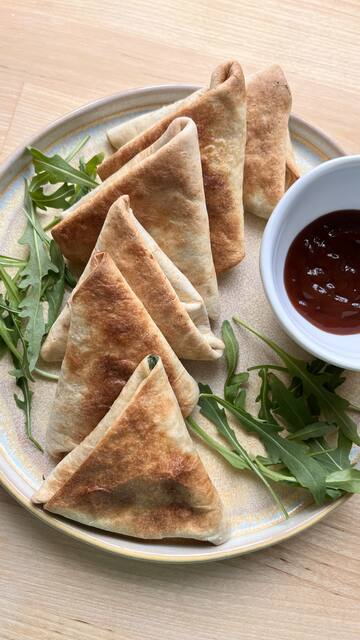
VídeoCon Wrap Low CarbTriángulos Rellenos de Pollo y Espinacas
 Con Panecillos proteicos Low Carb
Con Panecillos proteicos Low CarbPanecillos Rellenos
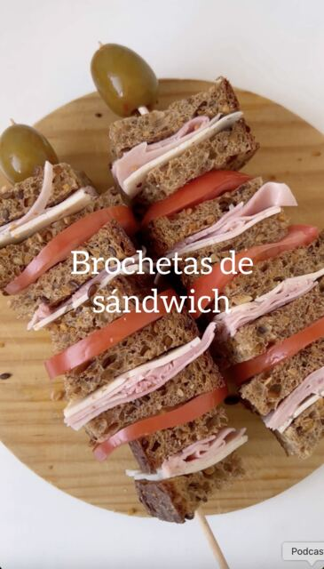
VídeoCon The Original Protein BreadBrochetas de Sandwich
VídeoCon Wrap Low CarbMini Quesadillas
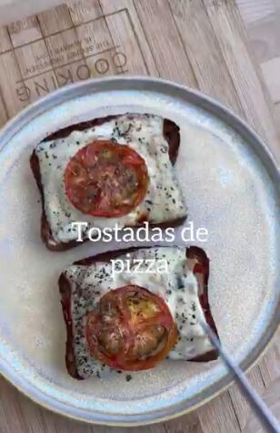
Con The Original Protein BreadTostadas de Pizza
 VídeoCon Wrap Low Carb
VídeoCon Wrap Low CarbDesayuno Ideal con Wrap
 VídeoCon Picada vegetal
VídeoCon Picada vegetalHamburguesas Vegetales Rellenas de Queso
 Con Pizza proteica
Con Pizza proteicaPizza Sin Gluten Proteica
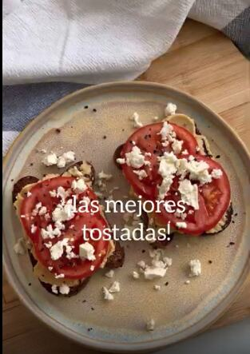
Con The Original Protein BreadTostadas de Hummus con Queso Feta
 Con Wrap Low Carb
Con Wrap Low CarbGalette con Bordes Rellenos (dulce)
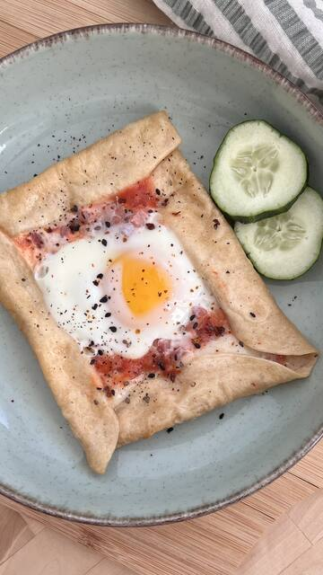
Con Wrap Low CarbGalette con Bordes Rellenos (salada)
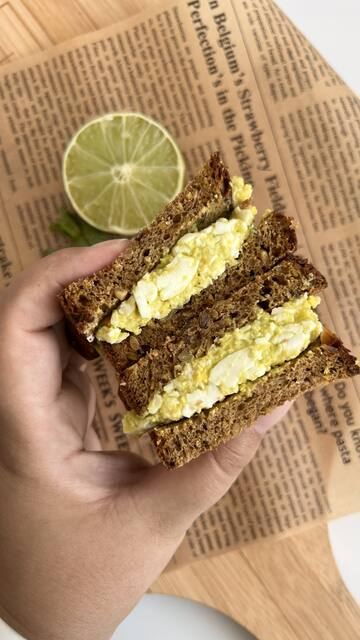
VídeoCon The Original Protein BreadSandwich Saludable Para Llevar a la Playa
 VídeoCon Panecillos proteicos Low Carb
VídeoCon Panecillos proteicos Low CarbPaninis Proteicos
 VídeoCon Picada vegetal
VídeoCon Picada vegetalRaviolis de Calabacín con Picada Vegetal
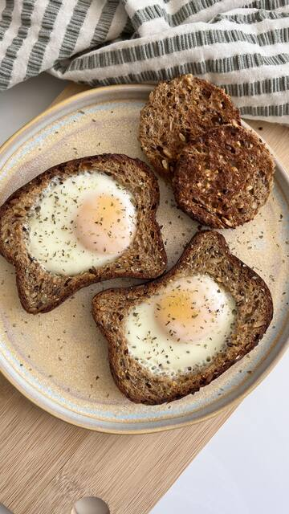
Con The Original Protein BreadTostada con Huevo al Hueco
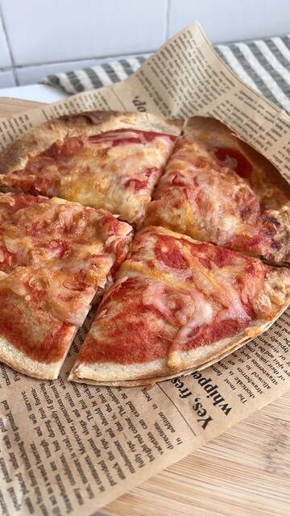
VídeoCon Wrap Low CarbPizza Quesadilla
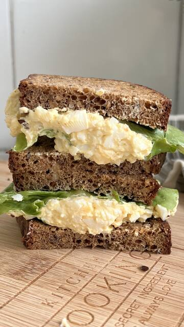
Con The Original Protein BreadSandwich de Huevo al Curry
 Con Panecillos proteicos Low Carb
Con Panecillos proteicos Low CarbPanecillos Rellenos de Atún
 VídeoCon The Original Protein Bread
VídeoCon The Original Protein BreadSandwich de Pollo
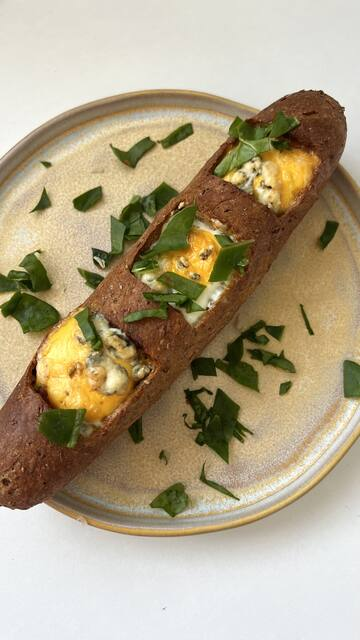
VídeoCon Baguettes Low CarbBaguette Rellena
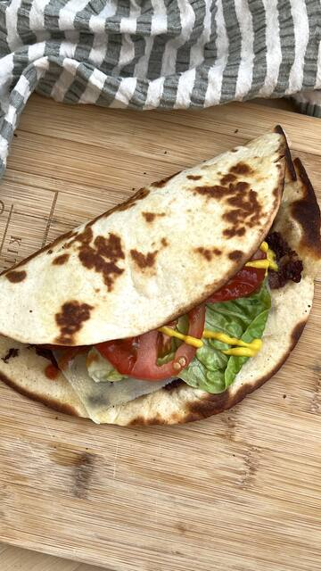
VídeoCon Wrap Low CarbTaco Burger
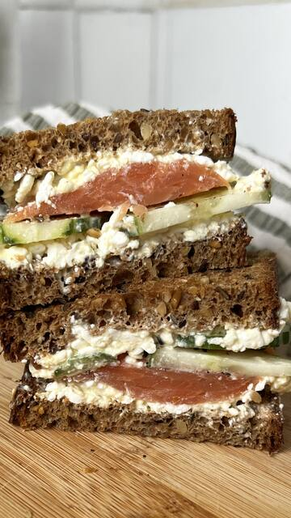
Con The Original Protein BreadSandwich de Queso Cottage y Salmón
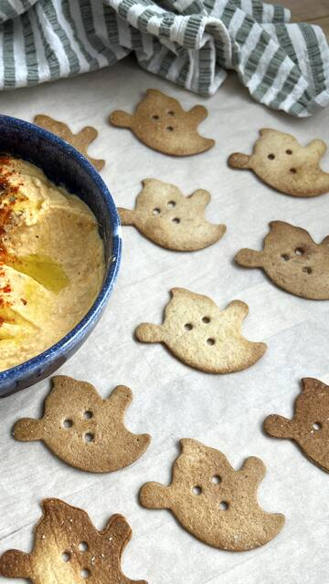
VídeoCon Wrap Low CarbCrackers de Halloween (fantasmas)
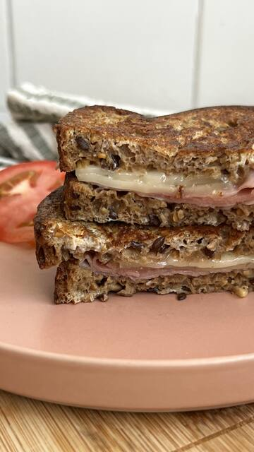
Con The Original Protein BreadTostadas Francesas Saladas (IG24)
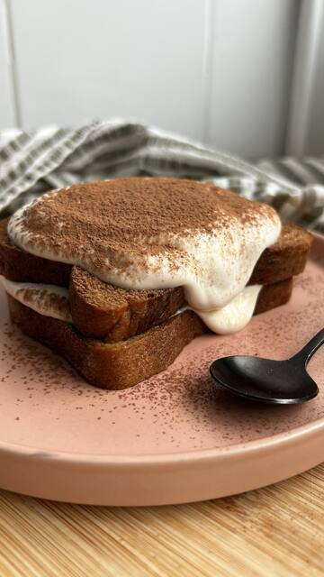
Con The Original Protein BreadTiramisú Exprés
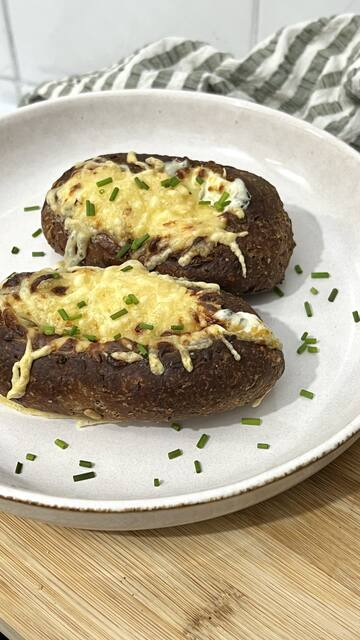
VídeoCon Panecillos proteicos Low CarbPanecillos 4 Quesos
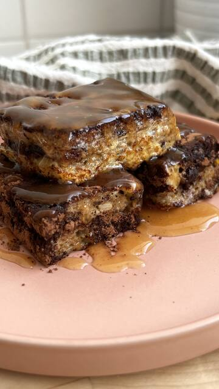
VídeoCon The Original Protein BreadBocaditos de Cacao
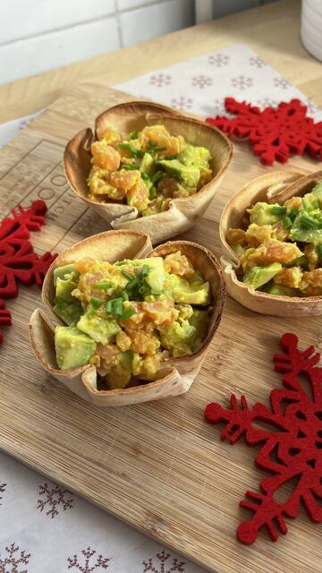
Con Wrap Low CarbCestitas con Salmón y Aguacate
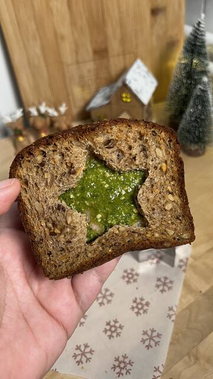
Con The Original Protein BreadSandwich Navideño
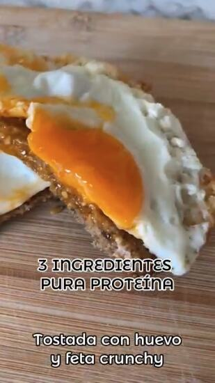
Con The Original Protein BreadTostada Feta Crunchy
 Con Sweet Protein Chocolate
Con Sweet Protein ChocolatePancakes Sweet Protein Chocolate
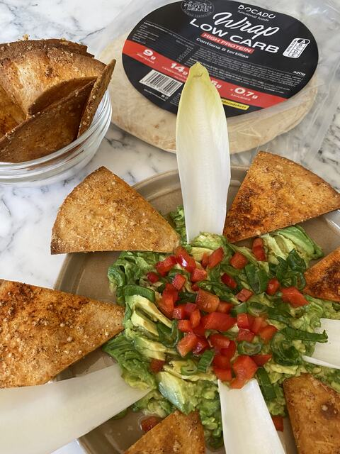
Con Wrap Low CarbNachos con Guacamole
 Con Sweet Protein Chocolate
Con Sweet Protein ChocolateMona Mix Vainilla
 Con Picada vegetal
Con Picada vegetalHamburguesa Vegana
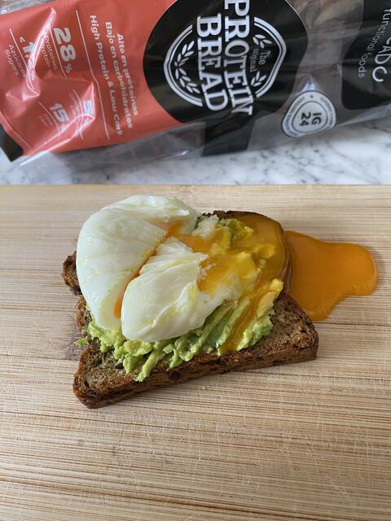
Con The Original Protein BreadHuevo Poché sobre Tostada
Con Panecillos proteicos Low CarbDesayuno 3 Ingredientes
 Con Pan Bio
Con Pan BioTostadas Virales
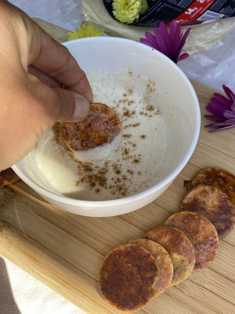
Con Wrap Low CarbMerienda para Niños
 Con Pan Bio
Con Pan BioTostadas de Colores
 Con Sweet Protein Chocolate
Con Sweet Protein ChocolateGalletas Sweet Protein
 Con Protein Choco Spread
Con Protein Choco SpreadCroissants de Chocolate
 Con Wrap Low Carb
Con Wrap Low CarbTortilla Express para Llevar
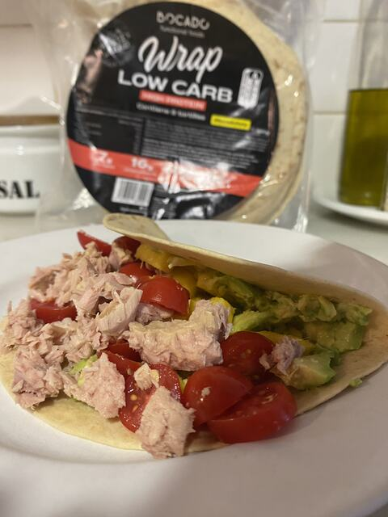
Con Wrap Low CarbEnsalada para Llevar en Wrap
 Con Protein Choco Spread
Con Protein Choco SpreadHelado Proteico de Chocolate
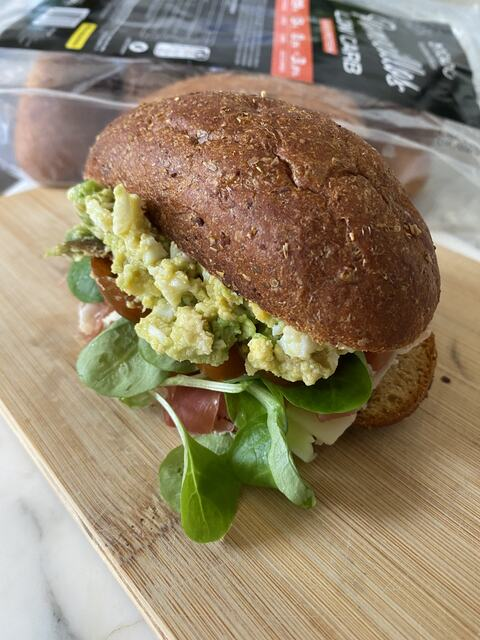
Con Panecillos proteicos Low CarbBocadillo Playero
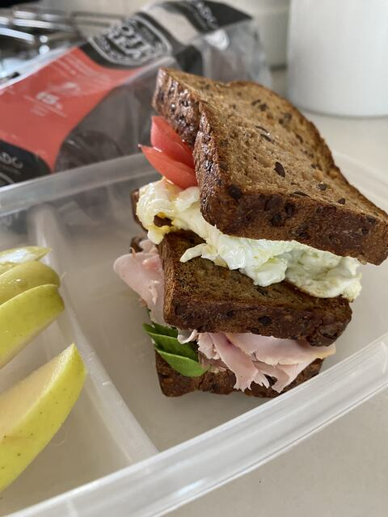
Con The Original Protein BreadTupper Triple de Protein Bread
 Con Pan de hamburguesa
Con Pan de hamburguesaBurger de Camping
 Con Baguettes Low Carb
Con Baguettes Low CarbBruschettas de Pesto, Mozzarella y Jamón Serrano
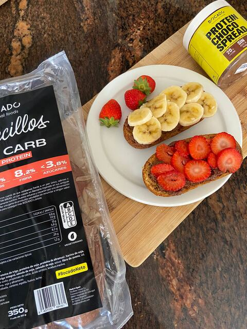
Con Panecillos proteicos Low CarbMerienda Vuelta al Cole
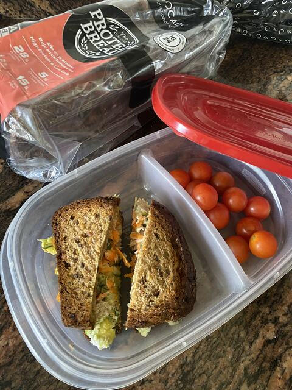
Con The Original Protein BreadTupper para Toda la Familia
 Con Pan IG24
Con Pan IG24Tostadas Virales de Pan IG24
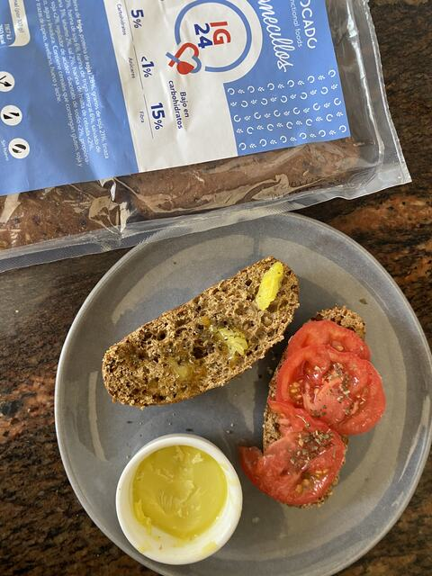
Con Panecillos proteicos Low CarbMantequilla Saludable de AOVE
 Con Protein Bagel
Con Protein BagelNYC Salmon Bagel
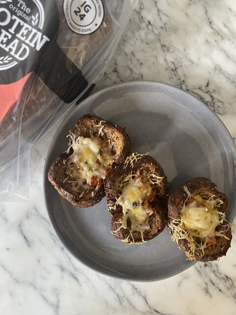
Con The Original Protein BreadCestitas de Bolognesa
 Con Protein Bagel
Con Protein BagelBagel con 55g de Proteína
 Con Sweet Protein Chocolate
Con Sweet Protein ChocolateMuffins de Halloween con Frosting de Calabaza
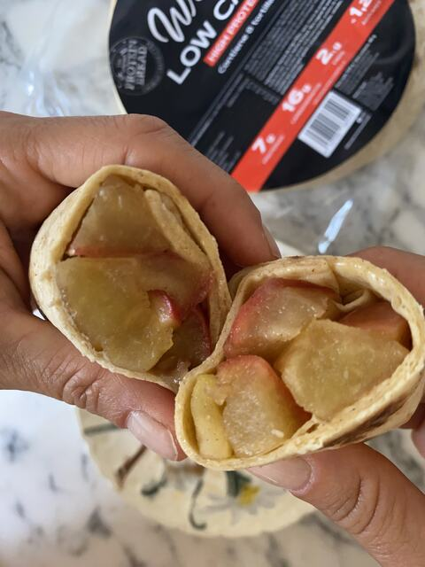
Con Wrap Low CarbApple Pie Express en Wrap
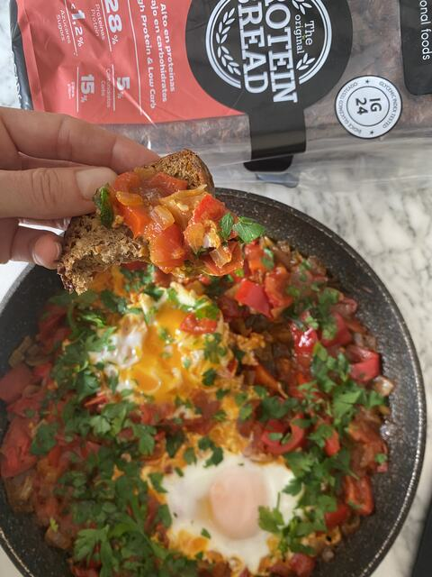
Con The Original Protein BreadShakshuka con Protein Bread
 Con Protein Bagel
Con Protein BagelBagel con Huevo y Yema Jugosa
 Con Wrap Low Carb
Con Wrap Low CarbConos de Espinaca y Ricotta
 Con Protein Bagel
Con Protein BagelBagel Navideño de Reno
 Con Baguettes Low Carb
Con Baguettes Low CarbQueso Navideño Relleno de Pistachos y Arándanos
 Con Panecillos proteicos Low Carb
Con Panecillos proteicos Low CarbBarquetas de Jamón y Queso
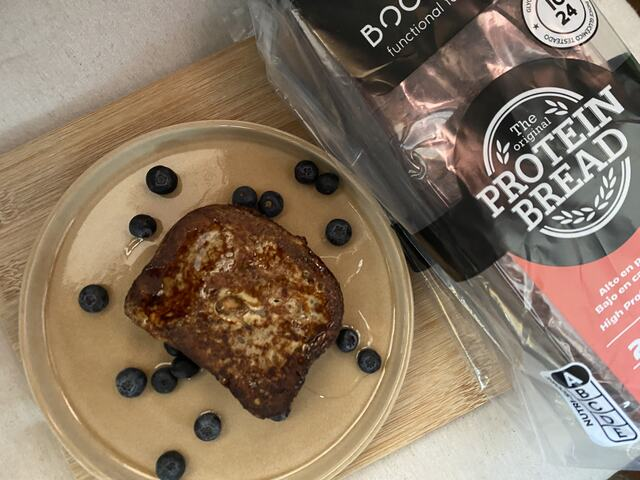
Con The Original Protein BreadFrench Toast de Año Nuevo
 Con Pan de hamburguesa
Con Pan de hamburguesaBocata de Pollo BBQ con Cole Slaw
 Con Pan IG24
Con Pan IG24